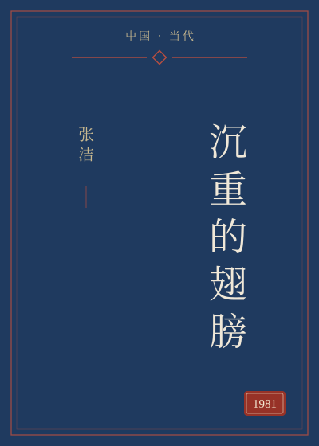
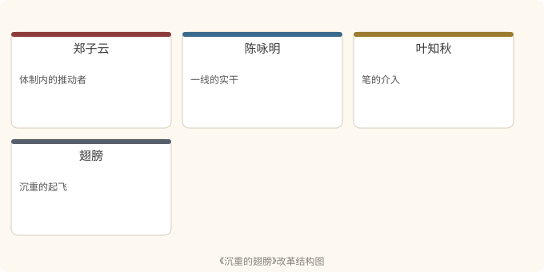

沉重的翅膀
一、基本信息
| 作者 | 张洁 |
|---|---|
| 成书/出版 | 第二届茅盾文学奖获奖作品（新华网 C024：'《沉重的翅膀》（获第二届茅盾文学奖）'；初版年份通说待核——修订本1984年说） 北京作协悼念张洁：爱，是不能忘记的（新华网）（官方媒体） |
| 国别/地区 | 中国 |
| 时代 | 现当代 · 当代 |
| 体裁 | 长篇小说 |
| 语言 | 汉语（白话） |

《沉重的翅膀》改革结构图（主题·结构图）
二、创作背景
新华网（C024）：张洁为'唯一两度获茅盾文学奖的作家'——《沉重的翅膀》获第二届茅盾文学奖。
题材（通说待核）：改革初期的工业部门与的重工业改革叙事——中国'改革文学'的代表作之一。
三、内容脉络
重工业部副部长郑子云与卡车厂厂长陈咏明的改革推进——舆论与体制的阻力（情节通说待核）。
叶知秋的记者线：介入与道德勇气（通说待核）。
四、主要人物表
| 人物 | 身份 | 说明 |
|---|---|---|
| 郑子云 | 副部长 | 改革派（通说待核） |
| 陈咏明 | 厂长 | 实干者（通说待核） |
| 叶知秋 | 记者 | 女性观察者（通说待核） |
五、主题与艺术特点
- '沉重的翅膀'：起飞的阻力（书名通说）。
- 改革文学的起点书写（通说待核）。
- 职业女性的道德位置（通说待核——张洁女性书写的另一面）。
六、影响与评论
- 新华网：'唯一两度获茅盾文学奖的作家'——本作为其第一届茅奖作品（C024）。
北京作协悼念张洁：爱，是不能忘记的（新华网）（官方媒体） - 中国作家网官方名单：第二届茅盾文学奖获奖作品（C012）。
历届茅盾文学奖获奖作品一览（中国作家网）（官方文学机构）
七、阅读建议
难点
- 1980年代工业体制背景。
- '改革文学'的套路识别。
- 《沉重的翅膀》（人民文学出版社，修订本1984说——通说待核）。
对照《乔厂长上任记》（蒋子龙——通说）：改革文学双璧。
八、待核实
- 初版与修订本年份核对。
- 郑子云/陈咏明/叶知秋人名核对。
- 两版差异（初版被要求修改说）待核。
本页主要来源
张洁的其他收录作品：无字